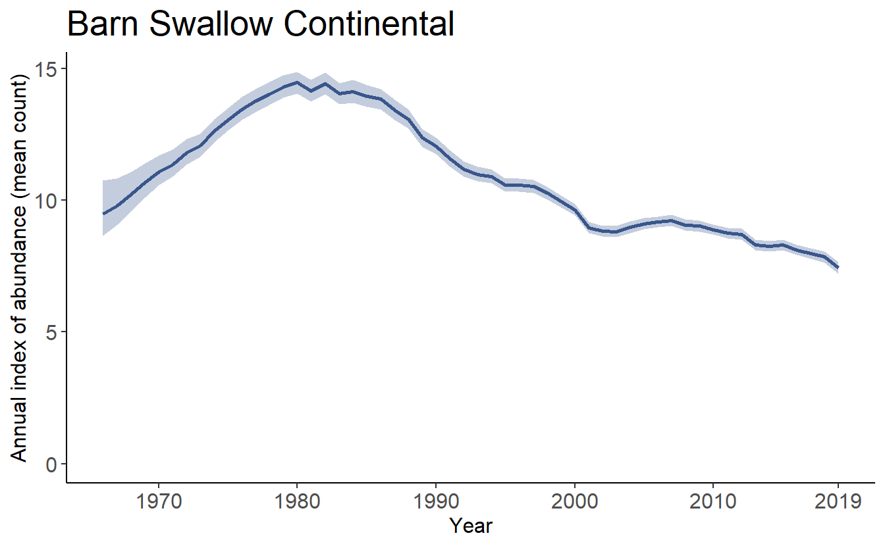

Chapter 7 Trajectory graphs and trend maps
Now that we have calculated values for the trends and trajectories, bbsBayes also includes functions to plot and map the values.
# load the trend and indices objects for Barn Swallow
load("Barn_Swallow_trends_indices.RData")7.1 Graphing the trajectories (annual indices)
The plot_indices() function produces a list of ggplot figures that can be combined into a single pdf file:
# Not run
tp = plot_indices(indices = indices,
species = "Barn Swallow",
title_size = 20,
axis_title_size = 12,
axis_text_size = 12)
pdf(file = "Barn Swallow Trajectories.pdf")
print(tp)
dev.off()Or, we can print plots to individual devices:
tp = plot_indices(indices = indices,
species = "Barn Swallow",
title_size = 20,
axis_title_size = 12,
axis_text_size = 12)
print(tp[[1]])
plot_indices() also allows the user to add points to show the observed mean counts as well as stacked dots to indicate the number of observations in each year.
tp2 = plot_indices(indices = indices,
species = paste("Barn Swallow","Full"),
add_observed_means = TRUE,
add_number_routes = TRUE,
title_size = 20,
axis_title_size = 12,
axis_text_size = 12)And we can compare these indices plots with those generated using only the smooths.
tp3 = plot_indices(indices = indices_smooth,
species = paste("Barn Swallow","Smooth"),
add_observed_means = TRUE,
add_number_routes = TRUE,
title_size = 20,
axis_title_size = 12,
axis_text_size = 12)Using the patchwork library, we can show these plots side-by-side:
library(patchwork)
print(tp2[[1]]+tp3[[1]])
7.2 Adding elements to indices plots
The output of the plot_indices() function is a list of ggplot objects, it is relatively easy to add components to the basic plot.
Here, we’ll use the first plot (continental trajectory) from the full population trajectory version above tp2[[1]] as the base plot, and we’ll add the smooth population trajectory information to the graph in a different colour.
First, extract the smooth population trajectory information in a dataframe.
library(tidyverse)
continental_smooth <- indices_smooth$data_summary %>%
filter(Region == "Continental")
Then we overlap the original plot with a new line and uncertainty ribbon.
overlay_plot <- tp2[[1]] +
geom_ribbon(data = continental_smooth,inherit.aes = FALSE,
aes(x = Year,ymax = Index_q_0.25,ymin = Index_q_0.975),
alpha = 0.2,
fill = "darkgreen")+
geom_line(data = continental_smooth, inherit.aes = FALSE,
aes(x = Year,y = Index),
colour = "darkgreen")
print(overlay_plot)7.3 Mapping the trends
The trends can be mapped to produce strata maps coloured by species population trends.
mp = generate_map(trends_smooth,
select = TRUE,
stratify_by = "bbs_cws",
species = "Barn Swallow Smooth")
print(mp)
7.4 Geofacet Trajectories
For stratifications that can be compiled by political regions (i.e., bbs_cws, bbs_usgs, or state), the function geofacet_plot will generate a ggplot object that plots the state and province level population trajectories in facets arranged in an approximately geographic arrangement. These plots offer a concise, range-wide summary of a species’ population trajectory.
gf <- geofacet_plot(indices_list = indices_smooth,
select = TRUE,
stratify_by = "bbs_cws",
multiple = FALSE,
trends = trends_smooth,
slope = F,
species = "Barn Swallow Smooth")
print(gf)